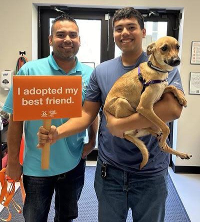

Charlie's New Beginning
Charlie, a 4-year-old Labrador mix, spent over a year at our shelter after being rescued from an abandoned property. Despite his difficult past, Charlie remained gentle and loving.
The Martinez family visited our shelter looking for a companion for their 10-year-old son, Miguel, who had been asking for a dog for years. When Miguel met Charlie, it was an instant connection. Charlie now enjoys daily walks in the park, playing fetch, and curling up next to Miguel during homework time.
"Charlie has brought so much joy to our home. He's patient with Miguel and has become such an important part of our family." - The Martinez Family